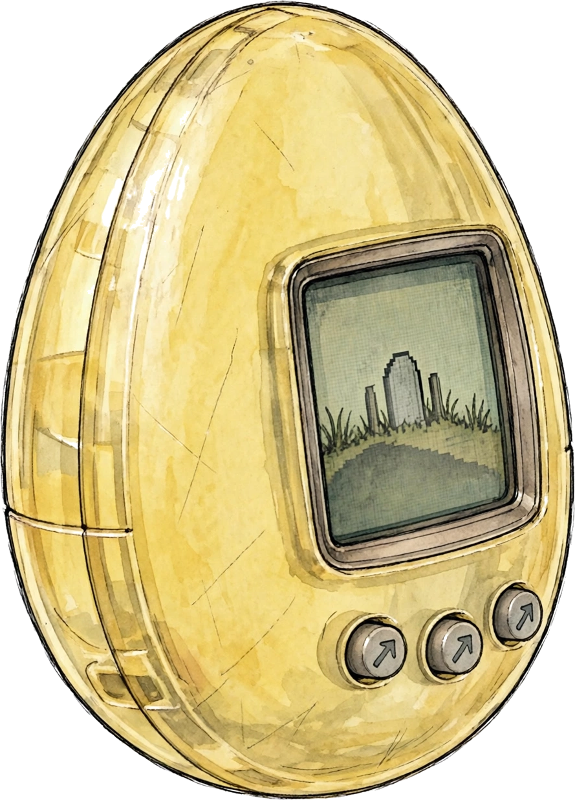
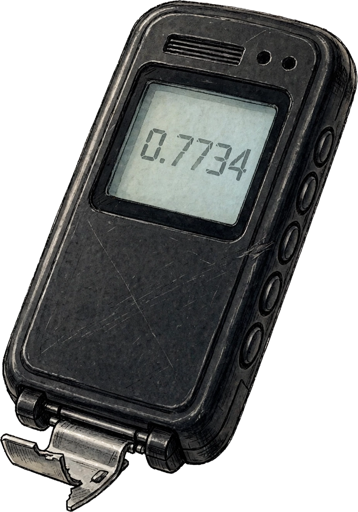

今日
已做 3 件
v17 过一遍。
午饭在路上。
应收表改一个数。
第 1 天 · 上午
拖欠 31 天
72 bpm
桌上
嗡。寻呼机在桌面上滑了一小段。
它比它先知道。
▼
手机
凉的 · 40 分钟

▓▒░

0.7734
·
·
房间
桌面
门
声音 · 语言 · 重新开始
design/hud/room.html · 房间视角 HUD：左上今日清单 · 右上第 N 天 / 时段 / 拖欠天数（心率第 9 天起）· 底部桌面条（箱子、手机、杯子、物件，物件图标就是它们的屏幕）· 对话框盖在上面 · 右下三个镜头 · 左下小菜单 · 没有背包、血条、时钟